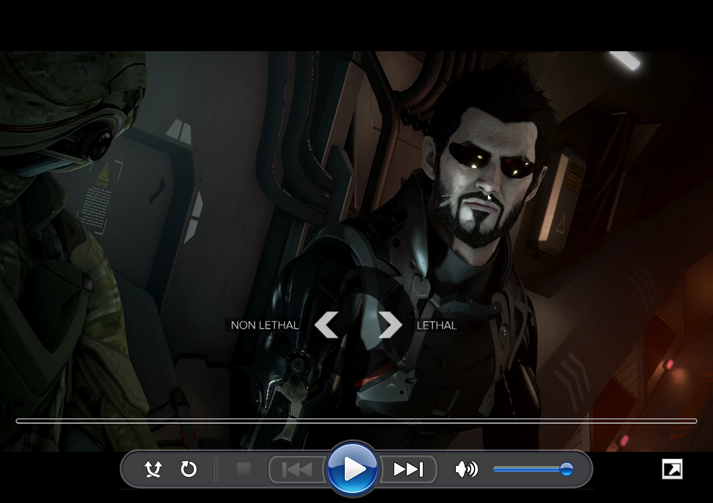

WMP-SVG
WMP-SVG is an attempt at recreating the graphics from Windows Media Player 11 and 12 using SVGs. WMP's original graphics were rasters, with SD and HD versions. The SVGs in this project were handwritten, using an image comparison slider (also handmade) to compare them with the rasters during editing and get them as close as I could.
A JavaScript-based custom element also exists for using the SVGs on a web page. Try it out here. You can view the repo on GitHub.
Caveats:
- The primary goal of this project was just the graphics, so the script only exists as a means to show them off; I didn't stress over trying to perfect it.
- Browsers may render certain parts of the UI incorrectly (i.e. you may see visible seams) due to sub-pixel rounding issues that are impossible to reliably mitigate using CSS. A pure-SVG implementation (rather than using SVG-format assets within an HTML/CSS/JS implementation) would likely avoid these problems, but wouldn't be as flexible or feature-capable.
- When used with the default button layout and at 1x scale, the player must be at least 551px wide in order to avoid being cropped in its dark theme. When controls are overlaid or the non-dark theme is used, the player should be at least 500px wide.
Screenshots:


Player at 2.5x scale (the HD original was 2x):
